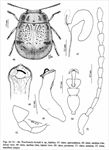

Click on images to enlarge
{kind=link}

Name
Trachymela biondii Daccordi, 2003
Corresponds to
Diagnosis and Notes
This is quite clearly the same species as Ta157, from the size, description and illustration of aedeagus.
Original description
Trachymela biondii n. sp.
(Figs. 46, 47, 48, 49, 50, 51, 52)
Type locality: Australia, NSW, Snowy mts.
Type series: Holotype ♂, Australia, NSW, Snowy mts. Shrlin on Shore by Snowy R., 21 - XI - 72, P. Zwick (AMS). Paratypes: 3 ♂♂, 1 ♀, same data, (ANIC, CDa).
DIAGNOSIS
For the elytra without verrucae, but with wide depressions, it reminds only T. sublineata (Bohemann, 1859) from which it is easily distinguishable for the bigger size, the spectrum orange colour in sublineata, the thorax more flattened at the sides of the new species and the shape of the median lobe of the aedeagus.
DESCRIPTION OF HOLOTYPE
Body shape elongated, convex with wide impressions of the elytral surface, particularly on the disc and behind the shoulders (fig. 46). Winged. Colour of elytra spectrum orange dotted with black. Orange yellow are the clypeus, the labrum, the epipleura, the abdominal sternites. Black are a stripe above the eyes crossing all the frons, two wide spots on the lateral hollows of the pronotum, two symmetrical small >-shaped spots on the disc of the pronotum, a very small one on the scutellum, and the anterior margin of the elytra. Browned are the antennae, the apex of the tibiae, the tarsi and the outer margin of the metasternum.
Labrum with the free margin widely and deeply arcuate; clypeus and frons with a strong punctation, very thick with elongated punctures; frontoclypeal sutures hardly perceptible, with a very open V-shape; eyes transverse, not protruding; mandibles strong, subquadrate, poorly protruding; last segment of maxillary palpus expanded to apex (fig. 52); antennae elongated beyond the humeral callus, the last five antennomeres slightly enlarged (fig. 51).
Prothorax wide, transverse (W. = 3.5 mm; L. = 1.5 mm), flat with deep, wide, symmetrical impressions on the sides; disc of the pronotum with a thick punctation, particularly strong and thick on the sides; lateral margins regularly arcuate, with anterior angles protruding, the hind ones rounded; thrichobothrial setae absent from all four corners of pronotum. Scutellum small, triangular, with sparse small punctures.
Elytra without verrucae, with a thick irregular punctation made of punctures of medium and small sizes; the elytral surface is irregular for the wide impressions on the disc and behind the shoulders; lateral margin arcuate with the maximum width in the middle; lateral callus hollowed from the half into a shallow ; epipleura vertical, inner margin without line of setae.
Hypomera hollowed with a vermiculous surface. Prosternum wide with a tormented surface; prosternal appendix narrow, grooved along the whole length. Mesosternal process with anterior angles extended as broad ridges to obliquely transverse knobs; posterior margin straight. Anterior intercoxal process of metasternum broad; metasternum lifted, thinly aciculate on the hind margin. Metaepisterna with a deep hollow along the outer margin.
Abdominal sternites with the surface slightly wrinkled, tormented and elongated punctures. Pygidium wide without median groove.
Legs with femora elongated, tibiae not enlarged apically; third tarsomere not incised, with a thick sole of hairs; onychium elongated; claws with a small tooth.
Median lobe short but very wide with apex in a little know, completely sclerified with a sharp carina in the middle of ventral side, base not fissured.
Measurements: body L. = 5.8 mm; body W. = 4.5 mm.
ETYMOLOGY
This new species is dedicated, as a token of esteem, to prof. Maurizio Biondi of the L'Aquila University, a profound specialist of Chrysomelidae Alticinae, a good friend of mine.
REMARKS
The female is similar, slightly bigger (body L. = 7.2 mm; body W. = 5.0 mm) and the first tarsomere is narrowest.
References
Daccordi, M. 2003, "New species of Chrysomelinae from New South Wales (Coleoptera Chrysomelidae: Chrysomelinae)", Ed. Daccordi, M. & Giachino, P.M. (eds), Results of the Zoological Missions to Australia of the Regional Museum of Natural Sciences of Turin, Italy. I., pp. 379-412, Monografie del Museo Regionale di Scienze Naturali, Torino, 35 (pages 403-405).
Copyright © 2026. All rights reserved.